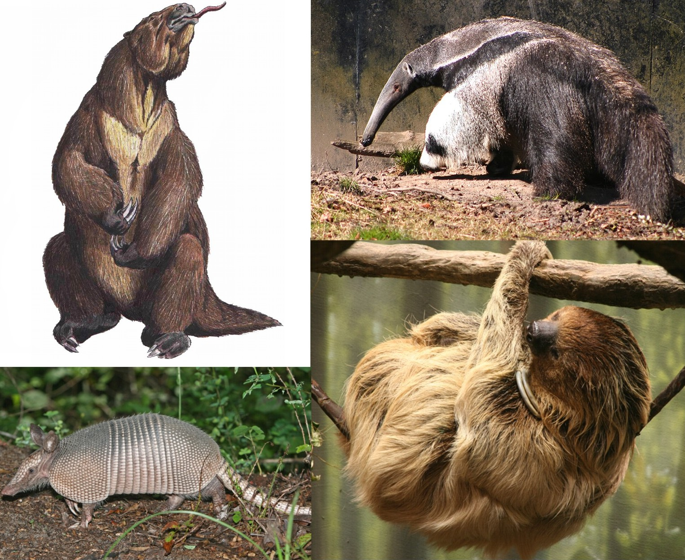

osos
Els ossos, óssos, onsos o orsos són mamífers de l'ordre dels carnívors. Són omnívors, si bé l'os polar, a causa de la manca d'altres fonts d'aliment, té una dieta quasi exclusiva de carn, i el 99% de la dieta de l'os panda consisteix en bambú.
| osos | oso perezoso | oso hormigero |
|---|---|---|
| oso negro | oso cansado | oso iperactivo |
| mida de la garra 10 cm | mida de la garra 10 cm | mida de la garra 10 cm |
| peso entre 150 y 230 Kg | peso entre 4,1 y 11,4 Kg | peso entre 120 y 200 Kg |